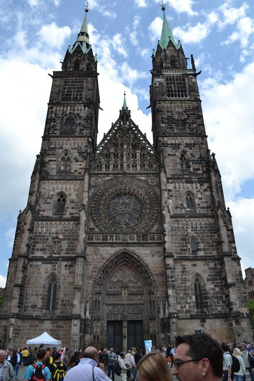
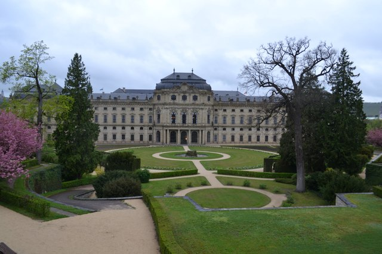

ドイツ三大美城のひとつエルツ城。 麓のモーゼルケルン駅から沢沿いの山道を80分ほど歩いて登っていくと鬱蒼とした深い森の中から突如として古城が現れる。 その立地ゆえ大同盟戦争でも攻められることなく850年前の中世の姿がそのまま残る。 ドラクエで中にお姫様が取り残されてそうなやつ。
沢沿いの道を歩きながら、この城の美しさの一部はその立地が作り出していると思った。 ここに辿り着くにはそれなりのコミットメントが必要になる。 もしこの城が都市の観光地のど真ん中にあったらここまでの感動はないだろう。 だれかの心を動かすものを作りたかったら何をしなければならないのかについてのある種のヒントを与えてくれる。
ネッカーシュタイナハのとなり街、ヒルシュホルン。 山の上に建つ古城は古城ホテルとして整備され、めったに予約できないことで有名。
夕暮れ時。石畳の上を乾いた落葉がカタカタと音を立てて舞っていく。
ヒルシュホルンの旧市街は古城の建つ山の麓に広がる。 歩けば5分で通り抜けられる小さな街だが、 小さいゆえに親密で、淡い色合いの建物が並ぶ路地は情緒にあふれている。
この日は早朝にシュトゥットガルトを出発し、 バーデン・ヴュルテンベルク州南西部のぶどう畑をお散歩する予定だったのだが、 Emmendingenまで行って霧が濃くて断念。 そこから大きくカールスルーエ、マンハイム、ハイデルベルクを経由して、 古城街道の街ネッカーシュタイナハにやってきた。 現地に着いたのは午後3時。 ドイツ国鉄のバーデン・ヴュルテンベルクチケット（青春18きっぷのようなもので州内の各駅停車が乗り放題になる）を片手にこういう気ままな旅をできるのが南ドイツ散歩の醍醐味だ。
この街にはネッカー川渓谷の斜面に4つの古城が建つ。 このうちヒンターブルクとシャーデックブルクは廃墟になっている。 別の場所でも書いたが、古城はきれいに保存されているものより朽ち果てたもののほうが美しいと思う。 人間の作り出した芸術美に、時間の作り出す自然美が重ね合わされるためだろう。
ネッカー河畔の山道を登っていく。黄金色に輝く紅葉が美しい。
シャーデックブルク。
シャーデックブルクのてっぺんの小窓から覗いたネッカー河畔の風景。 ネッカー川の流れは穏やかで、鏡のように平らな水面に深まる秋の青空が映る。 ときは流れ古城は朽ち果てたが、この小窓から覗くネッカー川の景色は変わっていないのだろう。 南ドイツで紅葉と新緑の風景がもっとも美しい場所のひとつが ハイデルベルク〜ハイルブロンのネッカー河畔だと思う。 風景というより情景がある。
ところで、南ドイツの軒先で見かけるこの植物。 秋になると葉は真っ赤に染まりブルーベリーのような実がなる。 これを家の花壇に植えたいなと思って写真で画像検索したのだが名前がわからない。 最終手段として(笑)、Yahoo!知恵袋で質問して答えを教えてもらった。 「ヘンリーヅタ」。 日本ではほとんど流通していないらしいが苗を手に入れることができたので花壇に植えました^^
古城街道の街バイロイト。 この街には2012年に世界遺産に登録された辺境伯歌劇場がある。 かねてからドイツバロックの傑作といわれるこの劇場を訪れてみたかったのだが、 世界遺産に登録されて以降しばらく修復のために閉鎖されていた。 当初は2016年に修復完了予定だったのが、実際に修復が終わったのは2018年春。 やっと訪れることができた。
辺境伯歌劇場。 壁と天井一面を覆い尽くすバロック美術が見事で、まるで宝箱の中に迷い込んだよう。
毎年夏にバイロイト音楽祭が行われるバイロイト祝祭劇場は、 リヒャルト・ワーグナーが自身のオペラ作品「ニーベルングの指環」を上演するために建設したもの。
この日のミュンヘンは朝から嵐だった。 バイエルン州南部は午前中ずっと嵐の予報が出ていたので、 とりあえず嵐を避けて、北へ北へと電車を乗り継ぐこと片道5時間、古城街道の街コーブルクにたどり着いた。
ドイツの天気は変わりやすい。 日本だと雨が降り出したら基本的に数時間は降り続いてることが多いが、 ドイツでは雨が降ったり晴れたり天気がころころ変わる。 雲とともにさっとやってきてさっといなくなる、そんな雨が多い。 京都の時雨に近い感覚なのかもしれない。 コーブルクに滞在している間も雨と晴れが何度か繰り返された。
古城街道の石造りの街は雨に濡れると重厚感が増す。 雨が上がって太陽の光が射しこみはじめる瞬間がいちばん美しいと思う。
コーブルク名物の炭火焼きソーセージ。 ソーセージって炭火で焼くとこんなにおいしいのかと驚いた。 乾燥させた松ぼっくりの炭火で焼くのがコーブルクの伝統だ。
丘を上ったところにあるコーブルク城塞。
落葉の季節の嵐のあとの山道。
帰りにニュルンベルクの駅でこんなものを手に入れた。 10月27日〜11月1日専用の時刻表。50ページある。 なぜこんなものが必要になるかというと、線路の工事に伴う迂回運転、バス代行輸送、祝日ダイヤ、 サマータイム終了などが重なって1日ごとに違うダイヤを組む必要が出たため。 ニュルンベルク17:10発の快速に乗ったのだが、 ドナウベルトからアウクスブルクまで大きく迂回してミュンヘンへ。 迂回運転のせいで本来の停車駅に寄れなくなったので、ミュンヘンまでノンストップという大胆なダイヤ。
ドナウ川の上流部にある街、ジグマリンゲン。 ドナウ川のほとりの岸壁にジグマリンゲン城が聳える。 12世紀には建っていたらしく時代を感じさせる立派な古城だ。
古城街道の都市。
もともと行く予定はなかったのだが、マウルブロン修道院に行くときに乗る電車の方向を間違えて辿り着いてしまった。 とくに何か見るところのある街という感じではなかったが、 ヘッセの「車輪の下」でハイルブロンが描かれているページを繰っているときにちょうどこの街に着いたので印象深い。
古城街道の有名な観光都市。ハイデルベルクの街はとても美しい。 街並みも美しいがネッカー川の景観が素晴らしく、深緑色の水面に対岸の新緑の萌木色が淡く映る。 そこにハイデルベルク城とアルトブリュッケの赤茶色が混じる。
唯一の難点は、ハイデルベルクの街は東西方向に長くしかも駅から旧市街までが遠いので、歩いて回るのが大変なこと。
ハイデルベルク城は多くの部分が廃墟化している。 中世の城郭は、きれいに保存されているものより朽ち果てているもののほうが好きだ。

ハイデルベルク城とアルテブリュッケの夜景。 この写真を撮るために午後9時まで待った。 雨がはらはら舞っていた。
古城街道の街。ミュンヘンからはけっこう遠く、電車で片道5時間近くかかる（が本を読んでいるので別によい）。 中世城郭都市としての街並みの保存状態が非常によく、高台に構えるローゼンベルク要塞はドイツ最大の中世要塞である。

古城は雨に濡れているといっそう美しい。
ローゼンベルク要塞から見渡すクローナハの街並み。
春が訪れている。

古城街道の街、ニュルンベルク。 バイエルン州第2の都市で、旧市街も相当大きく一日では回りきれないくらい見どころがある。
街のシンボル、ニュルンベルク城（カイザーブルク）からの眺め。 カイザーブルクはいかにも古城街道の古城らしい厳しい造りの要塞だ。
聖ローレンツ教会。

フラウエン教会の前の市場。ここで買ったプリザーブドフラワーは家の玄関に飾ってある。
オーストリア・チェコ・ドイツの国境に位置する街、パッサウ。 小高い山の上には古城が聳えている。
パッサウに来た理由はこれを見るためだ。 ドナウ川、イン川、イルツ川の3つの河川が古城の麓で合流しており、 古城のてっぺんから見ると3色の違う色を持つ川が混じっていくのが見えるのだ。
聖シュテファン大聖堂。教会オルガンとしては世界最大のパイプオルガンがある。バロック様式の装飾が見事。
ハールブルクの駅にやってくる電車は2時間に1本。 駅に降り立ったのはぼくひとり。 ここから高台の山に登ってハールブルク城に行く。 5月の初夏のコントラストが美しい。

ハールブルク城の城郭の裏手にある小麦畑。
バイエルン州最北部に位置するヴュルツブルク。ロマンティック街道の起点になる街だ。
マリエンベルク要塞と旧マイン橋。
世界遺産に登録されているヴュルツブルク司教館。内部は荘厳なバロック様式。裏手の庭園が美しい。

古城街道に位置するバンベルクには、いかにも「古城街道！」という感じの立派で荘厳な建築物が立ち並んでいる。 旧市街が世界遺産に登録されている。 1日では歩いて回りきれないような見どころ満載の観光都市である。
橋の上に立つ旧市庁舎。
小ベネツィアと呼ばれる川沿いの風景。